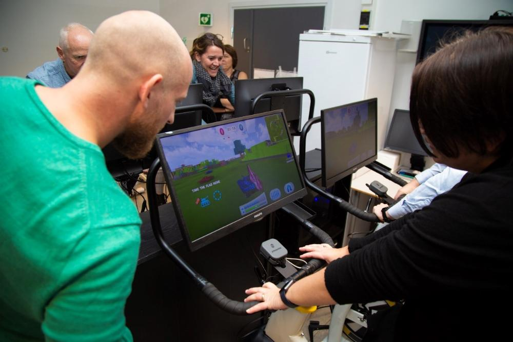
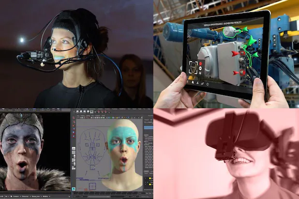

Haoran Sun
The Game Technology for Health (GT4H) Network brings together knowledge and expertise about serious gaming for health benefits from different research groups across Departments and Faculties at NTNU. The aim of the network is to connect researchers and professionals both within and outside NTNU that develop or use game technology for health, in order to deliver high quality research and advance our knowledge at the best value possible.Representatives from the Norwegian Institute of Public Health trying the Playpulse tank game when visiting the Department of Circulation and Medical Imaging. The tank is controlled with a stationary bicycle and buttons on the handlebars.

Game Technology 4 Health (GT4H) is a network supported by NTNU Health.At NTNU, several expert teams are already working at the scientific forefront with exergaming, training apps, serious games, and integration with VR/AR technology. By broadening current collaborations and strengthening the network, NTNU is perfectly positioned to become nationally leading in this area.Game technology has developed tools to stimulate people to be active, provide instructions and feedback to patients, and maintain motivation and adherence.
supporting the adoption of health information technology
new opportunities have been created to use information
to support consumer engagement, education, disease
management, and care delivery. Games offer a uniquely
valuable tool for taking complex health data and making
it meaningful and actionable to patients across a variety
of demographics and health states.The field of health games is going through a combinatorial explosion—where declining technology costs, growing
clinical and professional interest in games, and an increasingly
Playing a game can be defined as an activity that someone engages in for amusement. We play games because it's fun; it increases brain function, practices cognitive skills and releases serotonin, the happy chemical. As technology has advanced, the thrill and allure of playing games has only increased, with more visual stimulus, creativity, and satisfaction.
What is game technology? Game technology, or gametech, refers to dedicated solutions and services that are used throughout a game's lifecycle and are built especially for the purpose of game development. This is in contrast to products which can be used by game developers but weren't built with them in mind.
As the Federal government has taken an increased role in
supporting the adoption of health information technology
new opportunities have been created to use information
to support consumer engagement, education, disease
management, and care delivery. Games offer a uniquely
valuable tool for taking complex health data and making
it meaningful and actionable to patients across a variety
of demographics and health states.The field of health games is going through a combinatorial explosion—where declining technology costs, growing
clinical and professional interest in games, and an increasingly refined understanding of what makes health games
work are shaping a variety of trends that are shaping the landscape for health games. The following is a summary of
some of the key trends identified by participants.
header
Video game technology is becoming a popular tool for medical training, and in some cases, helping medical personnel do their jobs better, the Washington Post reports. For example, training program Osso VR helps surgeons get access to information in real time via a virtual reality headset, alongside tools that enable them to assess how to perform surgery. “Osso VR is 230 percent more efficient than traditional methods,” the Washington Post says. Developed just a few years ago, it's now used to train over a thousand surgeons a month worldwide.
The multimillion-dollar Auris Health Monarch surgical platform utilizes controllers that wouldn’t feel out of place in front of an Xbox or Playstation.Medical videogame company Level Ex has built a mobile-based gaming platform meant to act as an engaging training tool for physicians. The Chicago company has developed educational gaming modules across different specialties like pulmonology, anesthesiology and cardiology.
If a phone is stolen, sensitive data remains inaccessible by the perpetrator.
Find missing Persons
3000 missing children were discovered in just four days using face recognition
3D scanning and facial recognition technology allows systems to actually create your likeness in the gaming world (so you can create a custom avatar that looks just like you), or to inventively transfer your own expressions to other digital creations. On top of that, the Intel® RealSense™ 3D camera could allow developers to create games that adapt to the emotions of the gamer by scanning 78 different points on a person's face. For example, a few grimaces at your game screen means the system would dial down the game's difficulty instantly.

Facial recognition is an exciting technology used for accomplishing a wide range of objectives like making online payments, unlocking phones, finding missing people, smarter advertising, and video games. While video game developers and gamers have welcomed the technology's use, experts (including gaming enthusiasts) are concerned about its privacy implications.
How Tencent's sweeping new facial scans will catch Chinese kids playing past curfew, you can check here Tencent But to a certain extent, it will indeed solve the addiction of teenagers to games,Good for the mental and physical health of minors.